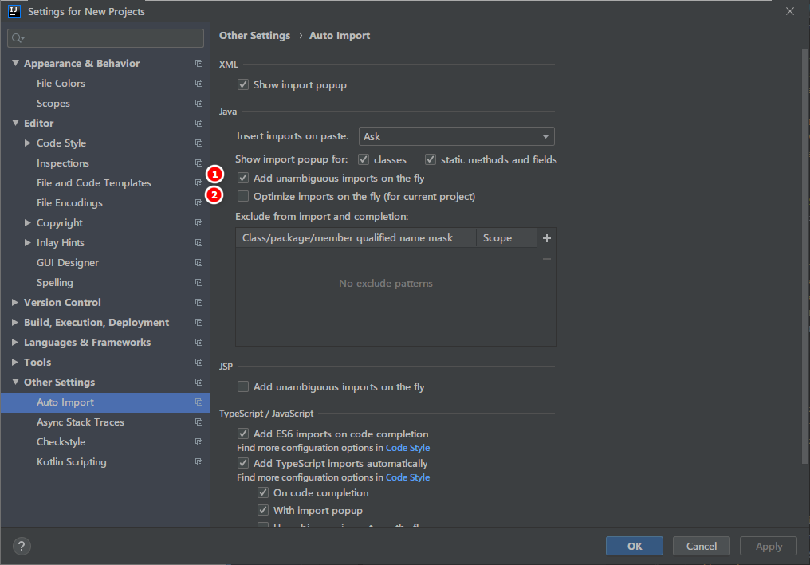

之前学习Java的时候，用的IDE是eclipse，免费也挺好用的。最近由于公司主要使用IDEA进行开发，因此转换到了IDEA。也听说过IDEA是开发Java最好用的IDE。用了一段时间后，确实感觉IDEA非常智能方便。
如果你之前使用的是其他的ide，刚开始会感觉不是很习惯。但当你熟悉IDEA的基本使用后，你会发现它相比其他ide的优点。
下面是我使用过程中，觉得IDEA中比较重要的设置，功能和技巧。
安装IDEA后，可能会感觉启动速度比较慢。通过修改IDEA的配置文件能有效加快IDEA的启动速度。
找到IDEA的安装目录，如：C:\Program Files\JetBrains\IntelliJ IDEA 2019.2.1，在bin文件夹里有 idea64.exe.vmoptions 的文件，修改如下参数：
-Xms128m，16 G 内存的机器可尝试设置为 -Xms1024m-Xmx750m，16 G 内存的机器可尝试设置为 -Xmx1024m-XX:MaxPermSize=350m，16G 内存的机器可尝试设置为 -XX:MaxPermSize=500m-XX:ReservedCodeCacheSize=225m，16G 内存的机器可尝试设置为 -XX:ReservedCodeCacheSize=500m
如上图标注 1 和 2 所示，默认 IntelliJ IDEA 是没有开启自动 import 包的功能。
IntelliJ IDEA 默认是会折叠空包的，这样就会出现包名连在一起的情况。但是有些人不喜欢这种结构，喜欢整个结构都是完整树状的，所以我们可以去掉演示中的勾选框即可。
如上图标注 所示，在打开很多文件的时候，IntelliJ IDEA 默认是把所有打开的文件名 Tab 单行显示的。但是我个人现在的习惯是使用多行，多行效率比单行高，因为单行会隐藏超过界面部分 Tab，这样找文件不方便。
| 插件名称 | 插件介绍 | 官网地址 |
|---|---|---|
| Key promoter | 快捷键提示 | https://plugins.jetbrains.com/plugin/4455?pr=idea |
| CamelCase | 驼峰式命名和下划线命名交替变化 | https://plugins.jetbrains.com/plugin/7160?pr=idea |
| CheckStyle-IDEA | 代码样式检查 | https://plugins.jetbrains.com/plugin/1065?pr=idea |
| FindBugs-IDEA | 代码 Bug 检查 | https://plugins.jetbrains.com/plugin/3847?pr=idea |
| Statistic | 代码统计 | https://plugins.jetbrains.com/plugin/4509?pr=idea |
| JRebel Plugin | 热部署 | https://plugins.jetbrains.com/plugin/?id=4441 |
| CodeGlance | 在编辑代码最右侧，显示一块代码小地图 | https://plugins.jetbrains.com/plugin/7275?pr=idea |
| GsonFormat | 把 JSON 字符串直接实例化成类 | https://plugins.jetbrains.com/plugin/7654?pr=idea |
| 快捷键 | 介绍 |
|---|---|
| Alt+回车 | 导入包,自动修正 |
| Ctrl+N | 查找类 |
| Ctrl+Shift+N | 查找文件 |
| Ctrl+Alt+L | 格式化代码 |
| Ctrl+Alt+O | 优化导入的类和包 |
| Alt+Insert | 生成代码(如get,set方法,构造函数等) |
| Ctrl+E或者Alt+Shift+C | 最近更改的代码 |
| Ctrl+R | 替换文本 |
| Ctrl+F | 查找文本 |
| Ctrl+Shift+Space | 自动补全代码 |
| Ctrl+空格 | 代码提示 |
| Ctrl+Alt+Space | 类名或接口名提示 |
| Ctrl+P | 方法参数提示 |
| Ctrl+Shift+Alt+N | 查找类中的方法或变量 |
| Alt+Shift+C | 对比最近修改的代码 |
| Shift+F6 | 重构-重命名 |
| Ctrl+X | 删除行 |
| Ctrl+D | 复制行 |
| Ctrl+/ 或 Ctrl+Shift+/ | 注释（// 或者/.../ ） |
| Ctrl+J | 自动代码 |
| Ctrl+E | 最近打开的文件 |
| Ctrl+H | 显示类结构图 |
| Ctrl+Q | 显示注释文档 |
| Alt+F1 | 查找代码所在位置 |
| Alt+1 | 快速打开或隐藏工程面板 |
| Ctrl+Alt+ left/right | 返回至上次浏览的位置 |
| Alt+ left/right | 切换代码视图 |
| Alt+ Up/Down | 在方法间快速移动定位 |
| Ctrl+Shift+Up/Down | 代码向上/下移动 |
| F2 或Shift+F2 | 高亮错误或警告快速定位 |